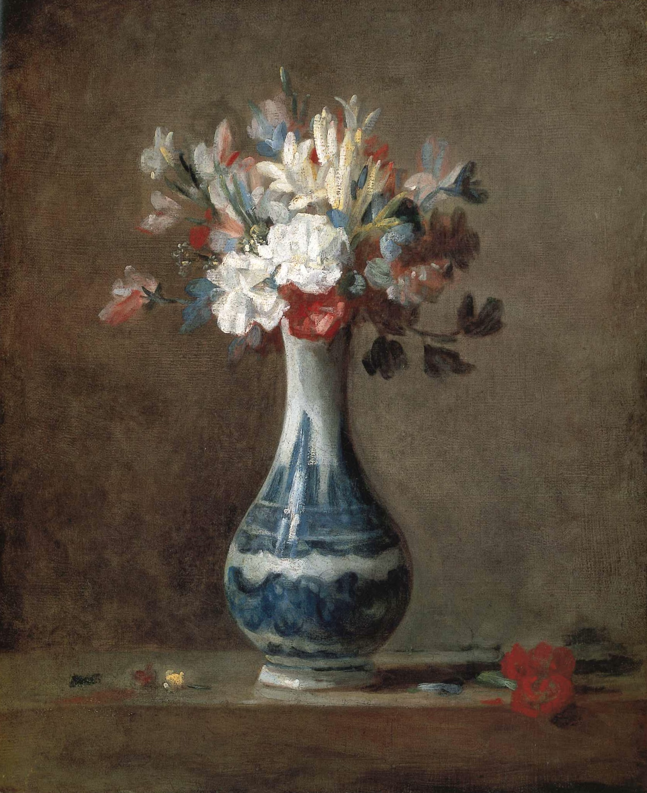

作品名 「花瓶の花」
花言葉 「無垢で深い愛」「母への愛」「純粋な愛」
カーネーション
「無垢で深い愛」
カーネーションの花言葉「無垢で深い愛」「母への愛」「私の愛は生きています」は、母の日に由来します。カーネーションの学名「Dianthus（ディアンサス）」は、ギリシア語の「Dios（神）」と「anthos（花）」を語源とし、「神の花」という意味になります。 また、カーネーションには愛情を表す花言葉が多くつけられているのですが、黄色い花にだけは黄色いカーネーションには「軽蔑（disdain）」「You have disappointed me（あなたには失望しました）」「rejection（拒絶、拒否）」といった不吉な花言葉がつけられています。
花瓶の花
ジャン・シメオン・シャルダン
ジャン・シメオン・シャルダンは、ロココ時代のフランスの画家。ロココ美術全盛の18世紀フランスを生きた画家であるが、その作風は甘美で享楽的なロココ様式とは一線を画し、穏やかな画風で中産階級のつましい生活や静物画を描き続けた。シャルダンの唯一残っている花の作品であり、最もよく知られているものの一つです。彼の特徴である明瞭さと抑制された表現が見事に表現されている。青と白のデルフト製の花瓶に、さまざまな花が活けられています。花や葉の白と青の色彩は花瓶の色彩と呼応し、他の花のピンク、赤、黄色の色彩を引き立てています。
| 作品名 | 花瓶の花 |
| 作者 | ジャン・シメオン・シャルダン |
| 制作年 | 1750年頃 |
| 種類 | キャンバス・油彩 |
| 寸法 | 45.2x 37.1 cm |
| 所蔵 | スコットランド国立美術館 |